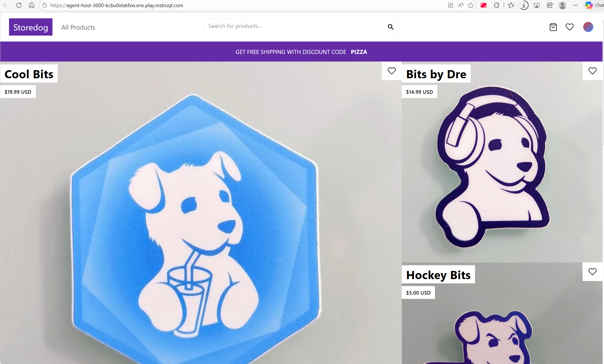

Tổng quan về Datadog Agent
Datadog Agent là phần mềm mã nguồn mở chạy trên host, có nhiệm vụ lắng nghe và thu thập events, logs, metrics rồi gửi về Datadog để xử lý và hiển thị.
Agent có thể cài đặt trên nhiều môi trường khác nhau — xem chi tiết tại Datadog Agent documentation.
Các thành phần của Agent
| Thành phần | Chức năng |
|---|---|
| Collector | Chạy các checks và thu thập metrics |
| Forwarder | Gửi dữ liệu (payloads) về Datadog |
| APM Agent | Thu thập application traces |
| Process Agent | Thu thập thông tin live processes |
Agent đi kèm nhiều integrations và có thể tự động chạy checks trên các dịch vụ phổ biến như Nginx, PostgreSQL, Redis. Tất cả đều được cấu hình qua các file YAML.
Cấu hình Agent
Agent có thể được cấu hình bằng 3 phương thức, sắp xếp theo thứ tự ưu tiên từ cao đến thấp:
- Remote Configuration — ghi đè tất cả
- Environment variables — ghi đè file YAML
- File
datadog.yaml— cấu hình cơ bản
IMPORTANT
Phương thức có ưu tiên cao hơn sẽ ghi đè phương thức thấp hơn. Ví dụ: nếu đặt biến môi trường
DD_ENV=production, nó sẽ ghi đè giá trịenvtrongdatadog.yaml.
Chi tiết file cấu hình xem tại Agent Configuration Files.
Remote Configuration
Remote Configuration cho phép cấu hình và thay đổi hành vi của Agent từ xa thông qua Datadog UI, không cần SSH vào server.
Khi bật, Agent sẽ định kỳ poll Datadog site để kiểm tra có thay đổi cấu hình nào cần áp dụng không.
Xem thêm: Remote Configuration docs.
Lab: Cài đặt Agent trên Host
Khám phá Storedog
Storedog là ứng dụng ecommerce demo, gồm nhiều dịch vụ:
Chạy trong Docker containers:
- Nginx web server
- NextJS frontend
- Ruby on Rails backend + worker
- Python Flask microservice (discount codes)
- Python Flask microservice (advertisements)
Cài trực tiếp trên host:
- Redis cache
- PostgreSQL database

Cài đặt Agent
-
Đăng nhập Datadog bằng tài khoản training.
-
Vào Integrations > Install Agents → chọn Linux.

-
Click Select API Key → chọn API key → click Use API Key.

-
Copy lệnh cài đặt Agent:

-
Paste vào terminal và chạy. Khi hoàn tất sẽ thấy thông báo:
Your Datadog Agent is running and functioning properly.
It will continue to run in the background and submit metrics to Datadog.
If you ever want to stop the Datadog Agent, run:
systemctl stop datadog-agent
And to run it again run:
systemctl start datadog-agent
Consider adding dd-agent to the docker group to enable the docker support, run:
sudo usermod -a -G docker dd-agentCác lệnh Agent quan trọng
Lệnh status — Kiểm tra trạng thái Agent
Hiển thị trạng thái Agent, các checks đang chạy, logs đang thu thập…
datadog-agent statusCác phần quan trọng trong output:
1. Forwarder — Process gửi dữ liệu về Datadog:
Forwarder
=========
Transactions
============
Cluster: 0
ClusterRole: 0
ClusterRoleBinding: 0
CronJob: 0
CustomResource: 0
CustomResourceDefinition: 0
DaemonSet: 0
Deployment: 0
Dropped: 0
ECSTask: 0
EndpointSlice: 0
HighPriorityQueueFull: 0
HorizontalPodAutoscaler: 0
Ingress: 0
Job: 0
KubeletConfiguration: 0
LimitRange: 0
Namespace: 0
NetworkPolicy: 0
Node: 0
OrchestratorManifest: 0
PersistentVolume: 0
PersistentVolumeClaim: 0
Pod: 0
PodDisruptionBudget: 0
ReplicaSet: 0
Requeued: 0
Retried: 0
RetryQueueSize: 0
Role: 0
RoleBinding: 0
Service: 0
ServiceAccount: 0
StatefulSet: 0
StorageClass: 0
VerticalPodAutoscaler: 02. Transaction Successes — Số giao dịch thành công với Datadog API:
Transaction Successes
=====================
Total number: 35
Successes By Endpoint:
check_run_v1: 11
intake: 4
metadata_v1: 7
process_discovery: 2
series_v2: 11
On-disk storage
===============
On-disk storage is disabled. Configure `forwarder_storage_max_size_in_bytes` to enable it.
API Keys status
===============
API key ending with 58fc3: API Key validTIP
Nếu chưa thấy Transaction Successes, chạy lại
statussau vài phút — Agent cần thời gian để bắt đầu giao tiếp với Datadog.
3. API Keys status — Xác nhận API key đang sử dụng. So sánh với API key trong tài khoản Datadog để đảm bảo gửi dữ liệu đúng account.
Lệnh config — Xem cấu hình resolved
Hiển thị tất cả giá trị cấu hình đã resolve (bao gồm default values và values từ environment variables).
datadog-agent configOutput mẫu:
api_key: '***************************58fc3'
app_key: '***********************************9a4fc'
env: agent-host-lab
fleet_policies_dir: /etc/datadog-agent/managed/datadog-agent/stable
hostname: agent-host
proxy:
http: ""
https: ""
no_proxy:
- 169.254.169.254
- 100.100.100.200
site: datadoghq.com
tags:
- env:agent-host-labHầu hết parameters được document trong configuration template trên GitHub.
Kiểm tra environment tag:
datadog-agent config | grep ^env
# Output: env: agent-host-labGiá trị này đến từ biến môi trường DD_ENV, được Agent installer tự động ghi vào cấu hình:
env | grep DD_ENVCấu hình Live Processes
NOTE
Agent tự động chạy nhiều system checks (cpu, disk, io, load, memory…) mà không cần cấu hình.
Nhưng một số tính năng cần bật thủ công, trong đó có Live Processes.
File cấu hình Agent
Trên Linux, các file cấu hình Agent nằm tại /etc/datadog-agent/ — được tạo tự động khi cài Agent.
Bật Live Processes
Live Processes cho phép xem real-time tất cả processes đang chạy trên infrastructure.
-
Mở
datadog.yamltrong IDE.

API key đã được cấu hình sẵn từ lệnh cài đặt.
-
Tìm đến Process Collection Configuration.
Dùng Ctrl/Cmd+F để search.

-
Tìm dòng
# process_config:.NOTE
Các file cấu hình Datadog có comment rất chi tiết. Nếu parameter bị comment (
#), giá trị default sẽ được sử dụng. -
Uncomment
process_config:(xóa#và space thừa). -
Uncomment
process_collectionvà đổienabled: false→enabled: true. -
Kết quả nên trông như sau:

-
Restart Agent để áp dụng thay đổi:
systemctl restart datadog-agent- Xác nhận bằng lệnh
status, tìm phần Process Agent > Collector:
datadog-agent statusPhần Collector nên trông thế này:
=========
Collector
=========
Last collection time: 2026-03-21 02:25:48
Docker socket: /var/run/docker.sock
Number of processes: 155
Number of containers: 0
Process Queue length: 0
RTProcess Queue length: 0
Connections Queue length: 0
Event Queue length: 0
Process Bytes enqueued: 0
RTProcess Bytes enqueued: 0
Connections Bytes enqueued: 0
Event Bytes enqueued: 0
Drop Check Payloads: []
Number of submission errors: 0Number of processes phải > 0.
- Nếu có vấn đề, kiểm tra cấu hình resolved:
datadog-agent config | grep process_collection -A1
# Output:
# process_collection:
# enabled: trueCấu hình Logging và Docker
Bật Log Collection
IMPORTANT
Agent không thu thập logs mặc định. Phải bật thủ công.
-
Mở
datadog.yaml, tìm Log Collection Configuration. -
Uncomment
logs_enabled: false→ đổi thànhlogs_enabled: true. -
Uncomment
logs_config. -
Uncomment
container_collect_all→ đổi thànhtrue(để thu thập logs từ tất cả Docker containers). -
Kết quả nên trông như:

-
Restart Agent:
systemctl restart datadog-agent- Kiểm tra trạng thái:
datadog-agent statusNếu gặp lỗi, kiểm tra lại indentation trong
datadog.yaml.
- Tìm phần Logs Agent trong output:
==========
Logs Agent
==========
Reliable: Sending compressed logs in HTTPS to agent-http-intake.logs.datadoghq.com. on port 443 (API Key: ***************************58fc3)
BytesSent: 0
EncodedBytesSent: 34
LogsProcessed: 0
LogsSent: 0
LogsTruncated: 0
RetryCount: 0
RetryTimeSpent: 0s
CoreAgentProcessOpenFiles: 23
OSFileLimit: 524287TIP
Tìm nhanh bằng lệnh:
datadog-agent status | grep -B1 -A12 "Logs Agent"
Cấu hình Docker Logs
BytesSent: 0 vì Agent chưa có quyền đọc Docker socket. Agent chạy dưới user dd-agent, cần thêm vào group docker:
- Thêm user vào group:
usermod -a -G docker dd-agent- Restart Agent:
systemctl restart datadog-agent- Chạy
statuslại — giờBytesSentsẽ có giá trị, và containers sẽ xuất hiện trong phần Integrations:
docker
------
- Type: docker
Service: discounts-service
Source: python
Status: OK
The log file tailer could not be made, falling back to socket
Inputs:
3f132ff8e4514c7927d415aa1d93ef853f447eb3463cd4bb60aa046c4bceee5b
Bytes Read: 5293640
Pipeline Latency:
Average Latency: 49.353029ms
24h Average Latency: 49.353029ms
Peak Latency: 1.009953529s
24h Peak Latency: 1.009953529s
Processing Rules: No rules appliedCấu hình APM Traces
Agent mặc định chỉ nhận traces từ localhost. Containers chạy trên network riêng → cần bật apm_non_local_traffic.
-
Mở
datadog.yaml, tìm và uncommentapm_config:.

Khác với
logs_config,enabledmặc định làtrue→ không cần đổi. -
Uncomment
apm_non_local_traffic→ đặt thànhtrue.

-
Restart Agent:
systemctl restart datadog-agent- Xác nhận Agent đang nhận traces:
datadog-agent statusPhần APM Agent sẽ hiện các traces từ Ruby và Python:
=========
APM Agent
=========
Status: Running
Pid: 20811
Uptime: 135 seconds
Mem alloc: 20,269,632 bytes
Hostname: agent-host
Receiver: 0.0.0.0:8126
Endpoints:
https://trace.agent.datadoghq.com.
Receiver (previous minute)
==========================
From ruby 3.0.3 (ruby-x86_64-linux), client 1.4.1
Traces received: 200 (205,881 bytes)
Spans received: 442
From ruby 3.0.3 (ruby-x86_64-linux), client 1.4.1
Traces received: 15 (1,242,394 bytes)
Spans received: 2521
From python 3.9.6 (CPython), client 1.7.2
Traces received: 1 (1,487 bytes)
Spans received: 13
Priority sampling rate for 'service:flask,env:agent-host-lab': 100.0%
Priority sampling rate for 'service:store-backend,env:agent-host-lab': 100.0%
Priority sampling rate for 'service:store-worker,env:agent-host-lab': 100.0%
Writer (previous minute)
========================
Traces: 0 payloads, 0 traces, 0 events, 0 bytes
Stats: 0 payloads, 0 stats buckets, 0 bytesTIP
Tìm nhanh:
datadog-agent status | grep -B1 -A25 "APM Agent"
Cấu hình Checks (Integrations)
Tổng quan về Agent Checks
Agent đi kèm hàng chục integrations (gọi là “checks”) — là các Python script thu thập metrics, events, logs từ host và dịch vụ.
Checks tự động: cpu, disk, memory, uptime…
Checks cần cấu hình: Redis, PostgreSQL, Nginx…
Mỗi check có file cấu hình trong thư mục con của datadog-agent/conf.d/.
Xem danh sách checks đang chạy:
datadog-agent configcheckOutput mẫu cho disk check:
=== disk check ===
Configuration provider: file
Configuration source: file:/etc/datadog-agent/conf.d/disk.d/conf.yaml.default
Config for instance ID: disk:67cc0574430a16ba
use_mount: false
~
===NOTE
- File
.default= core checks, chạy tự động.- File
.example= template cần rename thànhconf.yamlđể kích hoạt.- Luôn phải restart Agent sau khi thay đổi file cấu hình check.
Tất cả checks đều có tài liệu tại Integrations documentation. Nếu cần check tùy chỉnh, xem Writing a Custom Agent Check.
Cấu hình Redis Check
-
Tìm tài liệu Redis trên Integrations docs:

-
Click Redis card — xem Overview, Setup, và Data Collected.
-
Mở
datadog-agent/conf.d/redisdb.d/.
Có 2 file:auto-conf.yaml(cho autodiscovery, bỏ qua) vàconf.yaml.example. -
Rename
conf.yaml.example→conf.yamlđể kích hoạt check.

-
Mở
conf.yamlvà cấu hình: -
Dưới
init_config:, uncommentservice:→ đặt giá trịredis. -
Uncomment
password:→ đặt giá trị:
0x660x6F0x6F0x620x610x72-
Cuộn xuống cuối file, uncomment toàn bộ phần
logs:. -
Đặt
path:
/var/log/redis/redis-server.log-
Đặt
servicethànhredis. -
Kết quả nên trông như:

-
Thêm user
dd-agentvào groupadm(vì Redis logs chỉ cho phépredisuser vàadmgroup đọc):
usermod -a -G adm dd-agent- Restart Agent:
systemctl restart datadog-agent- Kiểm tra phần Checks trong
statusoutput — redisdb check phải hiện [OK]:
redisdb (8.5.0)
---------------
Instance ID: redisdb:da51d23ebfec1153 [OK]
Configuration Source: file:/etc/datadog-agent/conf.d/redisdb.d/conf.yaml[0]
Total Runs: 1
Metric Samples: Last Run: 100, Total: 100
Events: Last Run: 0, Total: 0
Service Checks: Last Run: 1, Total: 1
Average Execution Time : 345ms
Last Execution Date : 2026-03-21 04:40:39.042 UTC (1774068039042)
Last Successful Execution Date : 2026-03-21 04:40:39 UTC (1774068039000)
metadata:
config.source: /etc/datadog-agent/conf.d/redisdb.d/conf.yaml[0]
version.major: 6
version.minor: 0
version.patch: 16
version.raw: 6.0.16
version.scheme: semver- Kiểm tra phần Logs Agent — redisdb logs phải hiện:
redisdb
-------
- Type: file
Path: /var/log/redis/redis-server.log
Service: redis
Source: redis
Status: OK
Inputs:
/var/log/redis/redis-server.log
Bytes Read: 0
Pipeline Latency:
Average Latency: 0s
24h Average Latency: 0s
Peak Latency: 0s
24h Peak Latency: 0s
Processing Rules: No rules appliedCấu hình PostgreSQL Check
-
Mở
datadog-agent/conf.d/postgres.d/. -
Rename
conf.yaml.example→conf.yaml. -
Tìm
instances:array. Cấu hìnhhost,username,password. -
Đặt
username: datadogvàpassword: datadog:

Đảm bảo
host,username,passwordthẳng hàng với nhau. -
Cuộn xuống ## Log Section.
-
Uncomment tất cả dòng trong block
logs. -
Đặt
path:
/var/log/postgresql/postgresql-14-main.log-
Đặt
servicethànhdatabase(sẽ thêm tagservice:databasevào log entries).
Kết quả:

-
Thêm
dd-agentvào grouppostgres:
usermod -a -G postgres dd-agent- Restart Agent:
systemctl restart datadog-agent- Kiểm tra:
datadog-agent status- Phần Running Checks — postgres phải hiện [OK]:
postgres (23.4.0)
-----------------
Instance ID: postgres:a6c8633603d3c492 [OK]
Configuration Source: file:/etc/datadog-agent/conf.d/postgres.d/conf.yaml[0]
Total Runs: 10
Metric Samples: Last Run: 189, Total: 1,890
Events: Last Run: 0, Total: 0
Database Monitoring Metadata Samples: Last Run: 1, Total: 1
Service Checks: Last Run: 1, Total: 10
Average Execution Time : 84ms
Last Execution Date : 2026-03-21 04:57:39.234 UTC (1774069059234)
Last Successful Execution Date : 2026-03-21 04:57:39 UTC (1774069059000)
metadata:
config.source: /etc/datadog-agent/conf.d/postgres.d/conf.yaml[0]
resolved_hostname: agent-host
version.major: 14
version.minor: 12
version.patch: 0
version.raw: 14.12 (Ubuntu 14.12-0ubuntu0.22.04.1)
version.scheme: semverNếu chưa thấy, chờ 1 phút rồi chạy lại
status.
- Phần Logs Agent — postgres logs:
postgres
--------
- Type: file
Path: /var/log/postgresql/postgresql-14-main.log
Service: database
Source: postgresql
Status: OK
Inputs:
/var/log/postgresql/postgresql-14-main.log
Bytes Read: 0
Lines Combined: 0
MultiLine matches: 0
Pipeline Latency:
Average Latency: 0s
24h Average Latency: 0s
Peak Latency: 0s
24h Peak Latency: 0s
Processing Rules: No rules appliedKhám phá Datadog UI
Đăng nhập
Đăng nhập Datadog bằng tài khoản trial. Hiển thị credentials bằng lệnh creds trong terminal.
Bật Log Management
Nếu đã bật trước đó, bỏ qua bước này.
-
Vào Logs.
-
Nếu thấy trang “Discover Datadog Log Management”:
a. Click Get Started.

b. Click Get Started lần nữa.

-
Logs Explorer sẽ hiển thị logs từ Storedog:

Infrastructure
-
Vào Infrastructure → thấy
agent-host. -
Click
agent-host→ mở host details panel. -
Tab Host Info hiển thị thông tin chi tiết về host:

-
Tab Processes — hiển thị Live Processes đã cấu hình.
-
Vào Infrastructure > Containers — thấy tất cả containers nhờ đã cấu hình Docker.
-
Click container
lab-advertisements-1→ xem metadata trong ALL TAGS. -
Tìm tag
env:agent-host-lab— tag này được gắn vào tất cả events, metrics, logs:

Nếu có nhiều environments, tag này giúp lọc và query dữ liệu theo môi trường.
-
Tab Logs — xem logs của container:

Nếu không thấy logs, đổi timespan →
Past 15 Minutes:

Logs Explorer
-
Vào Logs để xem tất cả Storedog logs.
-
Trong facets panel bên trái, expand Service → chọn
discounts-service:

Thấy logs từ Storedog nhờ đã bật
container_collect_all. -
Click vào 1 log entry — ngoài nội dung log, Agent còn thu thập metadata: CONTAINER NAME, DOCKER IMAGE, SERVICE, SOURCE:

Datadog tự động parse tag
sourcevà map tới sources đã biết (Python, Ruby, Nginx, Redis…). Xem lại fileconf.yamlcủa PostgreSQL và Redis sẽ thấy parametersource.
APM Traces
- Vào APM > Traces > Explorer để xem traces:

Dashboards
Vào Dashboards — Datadog cung cấp dashboards dựng sẵn cho mỗi integration:
- Docker - Overview
- NGINX - Overview
- NGINX - Metrics
- Postgres - Overview
- Postgres - Metrics
- Redis - Overview
Thông tin cấu hình bổ sung
Deployment tools
Có thể cài Agent qua: Ansible, Chef, Puppet, Saltstack.
Xem thêm: Basic Agent Usage - Configuration management.
Canonical và Alias Hostnames
Một host có thể có nhiều tên. Datadog tự động chọn canonical hostname cho tag host và liệt kê các tên còn lại là aliases.
Ví dụ:
- Canonical:
IIS-Demo-Test-2(custom) - Alias 1:
i-0ce73f1a905c8ddee(AWS instance ID) - Alias 2:
ip-172-31-56-89.ec2.internal(EC2 internal hostname)

Xem thêm: How does Datadog determine the Agent hostname?
Network Traffic
- Tất cả traffic outbound từ host qua TCP hoặc UDP.
- Traffic luôn được Agent khởi tạo → Datadog không bao giờ tạo session ngược lại Agent.
Firewall rules:
- Chỉ cho phép Agent truy cập từ ứng dụng/nguồn tin cậy.
- Xem danh sách domains cần whitelist: Network Traffic - Destinations.
Ports:
- Xem danh sách ports tại Network Traffic - Open Ports.
- Nếu port mặc định bị trùng, thay đổi trong section Advanced Configuration của
datadog.yaml.
Xử lý sự cố (Troubleshooting)
Log Level của Agent
Đặt log level qua parameter log_level trong datadog.yaml:

| Option | Critical | Error | Warn | Info | Debug | Trace |
|---|---|---|---|---|---|---|
'OFF' | ||||||
'CRITICAL' | ✅ | |||||
'ERROR' | ✅ | ✅ | ||||
'WARN' | ✅ | ✅ | ✅ | |||
'INFO' | ✅ | ✅ | ✅ | ✅ | ||
'DEBUG' | ✅ | ✅ | ✅ | ✅ | ✅ | |
'TRACE' | ✅ | ✅ | ✅ | ✅ | ✅ | ✅ |
WARNING
Mặc định là
INFO. Chỉ bậtDEBUGkhi troubleshoot vì nó tăng số lượng indexed logs đáng kể. Nhớ đặt lạiINFOkhi xong.
Gửi “Flare” cho Datadog Support
Flare gom tất cả file cấu hình và logs vào 1 archive, tự động xóa thông tin nhạy cảm (passwords, API keys, proxy credentials, SNMP community strings).
datadog-agent flare <CASE_ID>- Nếu đã có case ID → nhập case ID + email.
- Nếu chưa có → nhập email đăng nhập Datadog → tạo support case mới.
Agent là mã nguồn mở, có thể xem code xử lý flare. Flare sẽ hỏi xác nhận trước khi upload.
Xem thêm: Flare commands.
Tổng kết
Trong khóa học này, bạn đã học:
- ✅ Cài đặt Agent trên host
- ✅ Cấu hình Agent qua
datadog.yaml(Live Processes, Logging, Docker, APM) - ✅ Sử dụng CLI commands:
status,config,configcheck - ✅ Bật Integration checks: Redis, PostgreSQL
- ✅ Khám phá Datadog UI: Infrastructure, Logs, APM Traces, Dashboards
TIP
Quy trình cấu hình check mới:
- Tìm docs integration trên Integrations page
- Vào
conf.d/<check>.d/→ renameconf.yaml.example→conf.yaml- Cấu hình connection (host, username, password…)
- Cấu hình logs section (path, service, source)
- Thêm user
dd-agentvào group cần thiết- Restart Agent:
systemctl restart datadog-agent- Verify:
datadog-agent status